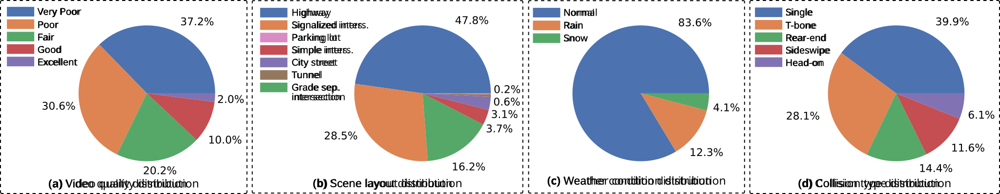

ACCIDENT
A Benchmark Dataset for Vehicle Accident Detection from Traffic Surveillance Videos
1 PiVa AI 2 MIT 3 University of West Bohemia in Pilsen 4 CTU in Prague
Benchmarks
A central goal of traffic monitoring is to detect accidents reliably from already deployed surveillance cameras, so that incidents can be identified quickly and downstream response can begin sooner.
This setting differs substantially from dashcam-based accident understanding: CCTV footage is fixed-view, often low quality, affected by compression artifacts, occlusion, and poor lighting, and lacks ego-motion cues. ACCIDENT is designed as a benchmark dataset for this surveillance setting, evaluating the same three tasks, when the accident happens, where it happens, and what type of collision it is, across three scenarios: in-distribution, out-of-distribution, and zero-shot, reflecting how such systems would be used in practice.
In-distribution
Standardized evaluation with matched train, validation, and test partitions on the real dataset.
Out of distribution
Measures how well methods transfer across regions and generalize under geographic shift.
Zero-shot
Evaluates methods that operate without benchmark-specific labeled training data.
Positioning
ACCIDENT is designed for traffic surveillance video rather than ego-centric driving footage. The comparison below highlights how it relates to prior CCTV collections, dashcam datasets, and synthetic driving data, and why we treat real and synthetic surveillance data as complementary parts of the benchmark.
| Dataset family | Main limitations | How ACCIDENT differs |
|---|---|---|
| CCTV accident datasets (e.g. TAD, CADP) | Internet-crawled clips, frequent duplicates, editing overlays, and limited annotation depth | ACCIDENT emphasizes standardized benchmarking with temporal, spatial, and collision-type annotation across broader surveillance conditions |
| Dashcam accident datasets | Viewpoint is fundamentally different from city-scale monitoring and traffic-camera deployment | ACCIDENT targets distant fixed-view surveillance footage rather than vehicle-mounted video |
| Synthetic driving datasets | Not sufficient on their own for benchmarking real-world surveillance performance | ACCIDENT combines real surveillance data with synthetic data instead of treating simulation as a standalone substitute |
Assets
ACCIDENT is built around heterogeneous surveillance footage. The benchmark statistics below summarize variation in scene layout, video quality, weather conditions, and collision types, and help explain why accident detection in CCTV video remains challenging even before moving to the example galleries.

Real-world surveillance data
The real subset contains 2,027 surveillance clips collected from heterogeneous online CCTV sources. These samples illustrate the conditions the benchmark is designed around: long-range fixed-camera viewpoints, heavy compression, motion blur, poor lighting, and small accident regions, with additional variation across weather, scene layout, and the five collision categories used throughout ACCIDENT.
Head-on
Head-on
Rear-end
Rear-end
Sideswipe
Sideswipe
Sideswipe
Single-vehicle
Single-vehicle
Synthetic data
The synthetic subset is generated with our CARLA-based framework and contains 2,211 clips spanning the same five high-level collision categories as the real data. It is included to support controlled evaluation under variations that are difficult to source consistently from real surveillance footage alone, including camera viewpoint, weather, and rare scenario design. Beyond accident time, location, and type, the synthetic videos also provide richer supervision such as bounding boxes, segmentation masks, and tracklets. The implementation is available in our GitHub repository.